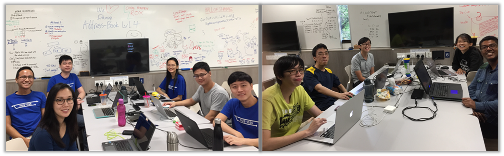

NUS-OSS is an initiative to help interested NUS SoC students become OSS developers.
Projects under NUS-OSS initiative have benefited more than ¾ million users.
We have a number of OSS projects that are especially suitable for NUS students to level-up their SE within the context of OSS projects.
| Project(s) | KLoC | Languages | Description |
|---|---|---|---|
| PowerPointLabs | 60 | C# | A productivity plugin for Microsoft Powerpoint estimated to have benefited more than 500,000 people (see product website) |
| TEAMMATES | 125 | Java EE, Angular, Javascript, HTML, CSS | An online feedback management system for education used by more than 300,000 users (see product website) |
| SE-EDU | 1-10 | Java | A collection of sample projects and other resources for SE students and teachers |
| RepoSense | 2-5 | Java, Javascript, HTML, CSS | A tool to monitor contributions to multiple Git repositories |
| MarkBind | 2 | Node.js HTML, JavaScript, CSS | A tool for generating educational websites from Markdown syntax. |
| TBD | - | TypeScript, Angular, Electron | A new project currently at prototyping stage. A Desktop App for anonymous peer testing of software products. |
Doing work outside modules will set you apart from those who are only good in academic work and will increase your chances of getting,
Each of the projects have their own documentation on how to get started.
If you have limited experience outside project in school modules, you can start with a smaller project such as those in SE-EDU and move to bigger projects after a while.
Vacations are especially good times to get started on our projects as our projects are more active during those times. We even have dedicated working space in school for those working on our projects during vacation times.
There are several ways to earn modular credit for OSS work

Some of the interns from 2017 summer batch
For NUS students, it is possible to get paid for work done in these projects.
Before you apply
Before you apply, ensure that you match both our expectations given below.
How to apply:
If you have questions, please contact project mentor Dr Damith.